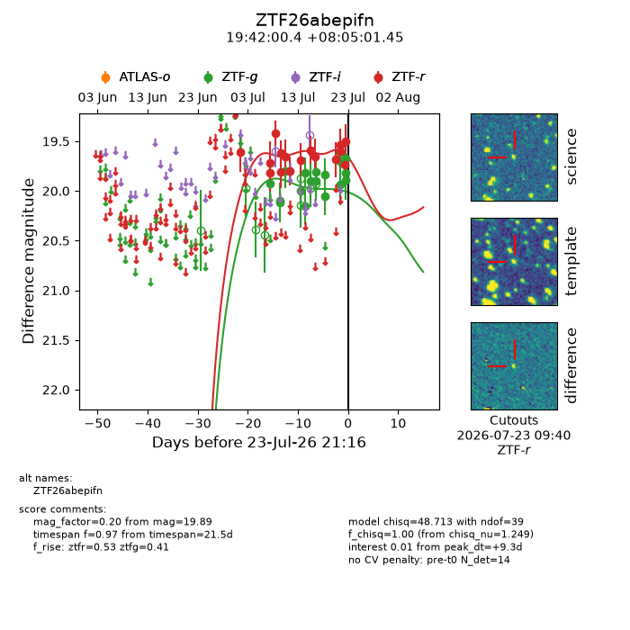
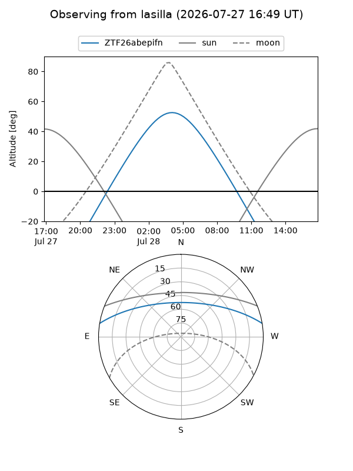
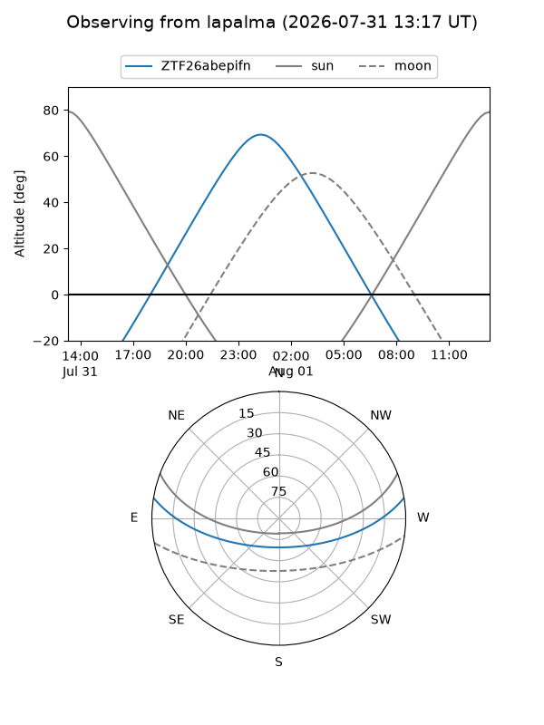
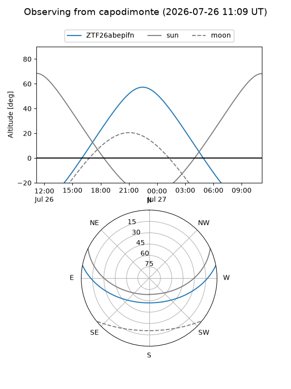
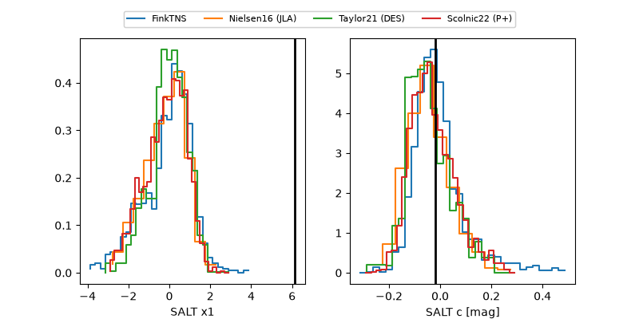

ZTF26abepifn
Target ZTF26abepifn at 2026-07-23 21:19
Aliases and brokers:
FINK-ZTF: ztf.fink-portal.org/ZTF26abepifn
Lasair-ZTF: lasair-ztf.lsst.ac.uk/objects/ZTF26abepifn
ALeRCE-ZTF: alerce.online/object/ZTF26abepifn
Direct TNS query: direct search
alt names
ZTF26abepifn (ztf,fink_ztf)
Coordinates:
equatorial (ra, dec) = 295.5016,+8.08374
equatorial (HMS+DMS) = 19:42:00.39,+08:05:01.45
galactic (l, b) = (45.9839,-7.39607)
Flags:
peak dt: +9.3
Photometry:
last ztfg=19.89, ztfr=19.50
18 ztfg, 16 ztfr detections
Lightcurve

Visibility



Additional plots
